반도체공학 Ch.8 — pn 접합 다이오드 · 강의 통합 해설
슬라이드 원문과 그 쪽을 설명하던 강의 육성을 한자리에 놓았다. 고등학교 수학(미분 = 변화의 빠르기)만 알면 읽히도록 풀었고, 전문 용어는 나올 때마다 일상어로 다시 설명한다. 원문에 있는 줄은 손글씨까지 하나도 빠뜨리지 않았고, 강의에서 한 말도 어느 쪽에 속하는지 전부 배정했다.
강의 전사 622줄 전부 쪽별로 배정 완료 (커버리지 100%). 빠진 대목 없음.
원문손글씨 필기강의에서 한 말자료에 없는 내용강의 중 판서시험 포인트정리 · 배경
1쪽표지 — Ch.8 The pn Junction Diode
Semiconductor Engineering
Ch. 8 The pn Junction Diode
Dept. of Electrical Engineering · Jeongkyun Roh
반도체공학 8장, pn 접합 다이오드다. 노정균 교수님 강의다.
7장은 p와 n을 붙였을 때 가만히 두면(전압 0) 어떤 모양이 되는지 봤다. 8장은 여기에 전압을 걸었을 때 전류가 얼마나 흐르나를 식으로 만든다.
그 식이 다이오드의 J–V 식이다. 이 장의 목표는 이 식 하나를 유도하는 것이다.
강의 00:00 "반도체공학 챕터 8, pn junction diode 시작하도록 하겠습니다. 이번 챕터도 마찬가지로 챕터 오버뷰를 진행을 하고 진도를 나가 보도록 하죠."
자료에 없음 00:00 진행 방식은 7장과 같다. Overview(2쪽)·목차(3쪽)는 한국어, 4쪽부터 본문은 영어(08:50부터).
2쪽Course Overview — 역방향·순방향 그림 한 장
PDF 의 이 쪽은 제목만 있고 비어 있다. 아래 내용은 전부 강의 영상의 판서에서 건진 것이다.
Chapter 8 · Course Overview
빈 쪽이다. 교수님은 여기에 7장 그림(공핍층)을 다시 그리고, 거기에 역방향 전압과 순방향 전압을 하나씩 걸어 보며 8장 전체를 미리 보여 줬다.
판서 00:16~07:56 이 쪽에 쌓인 판서 전체(마지막 프레임). 왼쪽 = 역방향, 오른쪽 = 순방향, 아래 = 8장의 사슬.
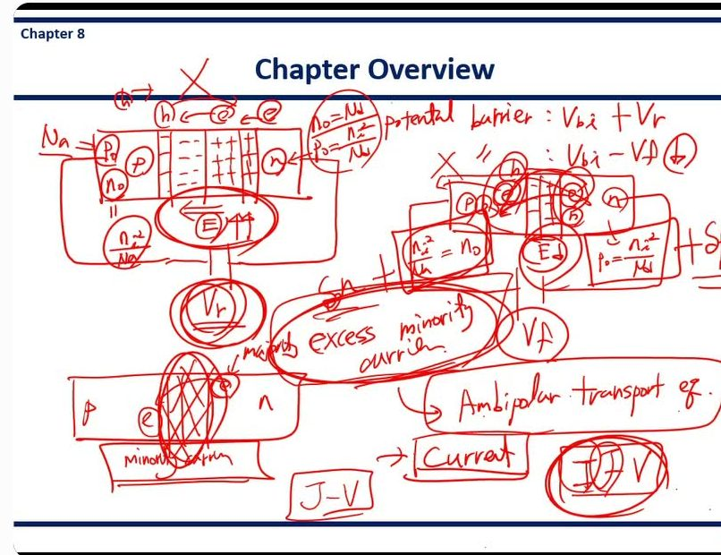
① 7장 복습 — 역방향 (왼쪽 그림)
판서 00:25~01:54 [판서] p | − − | + + | n 막대 위에 "h ← e ← e" 화살표와 ✕, 아래 Ⓔ (화살표 ←), 그 아래 큰 동그라미 Vr
7장 그림을 다시 그렸다. 전자가 n→p 로 확산 → 정공과 재결합 → 공간전하 → 전기장 Ⓔ → 더 이상 확산 없음(✕). 여기에 역방향 Vr(n 에 +)을 걸면 Ⓔ 옆에 "↑↑" — 전기장과 공간전하가 더 커진다.
강의 01:03 "리버스 바이어스를 걸어 주면 원래의 포텐셜 배리어는 빌트인 포텐셜이었는데요, 포텐셜 배리어가 더 커졌죠. 일렉트릭 필드가 더 커지고 스페이스 차지 영역도 더 늘어났죠. … 더 이상 일렉트론이 넘어가거나 홀이 넘어가는 게 없었단 말이죠. 커런트가 안 흐르는 상황이 리버스 바이어스 컨디션이었는데."
판서 03:02~03:52 [판서] Na ⇒ p₀, n₀ = ni²/Na (p 쪽) · n₀ = Nd, p₀ = ni²/Nd (n 쪽, 동그라미)
역방향(열평형과 거의 같음)에서 각 영역의 다수·소수 캐리어 농도를 4장 식으로 적었다. 소수 캐리어 n₀ = ni²/Na 는 "그렇게 높진 않다".
② 순방향 (오른쪽 그림)
판서 01:54~02:57 [판서] potential barrier : Vbi + Vr / 〃 : Vbi − Vf (⊕ 표시) · 오른쪽 막대에 Ⓔ↓, 아래 Vf
같은 막대에 이번엔 p 에 + 를 건다(순방향, Vf). 공간전하가 줄고(Ⓔ↓) 장벽이 Vbi − Vf 로 낮아진다. 그러면 전자와 정공이 다시 넘어간다(막대 위 e, h 동그라미와 화살표).
강의 02:24 "원래라면 이 일렉트릭 필드에 의해서 디퓨전이 막혀 있었잖아요. 그런데 이 일렉트릭 필드의 크기가 줄어들었기 때문에 디퓨전이 또다시 일어납니다. … 물론 건너간 이후에 이 일렉트론이 끝까지 도달한다는 건 아닙니다. 홀이 이렇게 만나서 리컴비네이션해서 일렉트론을 없애죠."
판서 03:53~05:08 [판서] ni²/Na = n₀ 상자 + δn · p₀ = ni²/Nd 상자 + δp · "majority → excess minority carrier" 큰 동그라미 · 아래 막대: n 쪽 e(majority) → p 쪽 e(minority)
원래 있던 소수 캐리어(n₀, p₀) 위에 넘어온 몫 δn, δp 를 더했다. 이 "여분"이 excess minority carrier. 아래 작은 막대는 같은 전자가 n 쪽에서는 majority, p 쪽에 들어가는 순간 minority 가 된다는 것을 보여 준다.
강의 04:43 "이 일렉트론이 처음에 n 타입에서는 머조리티 캐리어였죠. 그런데 얘가 디플리션 영역을 지나가서 p 타입에 도달하는 순간 뭐가 됩니까? 마이너리티 캐리어가 되죠. … 이게 여분의 마이너리티 캐리어이기 때문에 excess minority carrier 가 되는 거고요."
③ 8장의 사슬 (아래)
판서 05:08~07:48 [판서] excess minority carrier → Ambipolar transport eq. → Current → J–V (I–V 겹쳐 씀)
8장 전체 순서를 화살표 하나로 그렸다. 과잉 소수 캐리어 → 6장 앰비폴라 식으로 농도 분포 → 그 분포로 확산 전류 → 전류–전압 식.
강의 05:29 "우리가 할 것은 뭐냐면, 여분의 마이너리티 캐리어 농도를 이용해서 앰비폴라 트랜스포트 이퀘이션을 이용해서 이 농도에 대한 이퀘이션을 찾고, 그걸 이용해서 이 커런트 방정식을 유도를 하고 싶은 거예요."
강의 05:46 "왜냐하면 우리가 지금 이 pn 정션에서는 드리프트 커런트는 신경 쓰지 않습니다. pn 정션에서의 커런트는 디퓨전 커런트예요. … 왜 일어나는지 봤더니 바로 이 excess minority carrier 의 디퓨전이더라, 로부터 시작을 하는 거죠."
강의 06:25 "궁극적으로 하고 싶은 것은 이 커런트–볼티지 관계식을 찾고 싶은 거죠, 다이오드에서요. 이 과정을 쭉 따라오다 보면 여러분들이 전기회로, 전자회로 시간 때 배웠던 전류–전압 특성 방정식을 유도하는 방법을 알게 되는 거죠. 이거를 유도하는 게 이번 챕터의 가장 큰 거고요."
강의 06:57 "추가로 나오는 것들은, 포워드 바이어스에서 일렉트릭 필드가 작아지는데 디플리션 영역 내부에서 제너레이션과 리컴비네이션이 일어나게 됩니다. … 그 효과도 고려해 줘야 되는 그런 것들도 추가로 배우게 될 겁니다."
자료에 없음 07:31 기호 약속. "i 로 쓰면 전류, j 로 쓰면 전류 밀도입니다." 슬라이드는 대부분 J(전류 밀도, A/cm²)로 쓰고 15쪽 마지막 식만 I 다. 면적을 곱하면 I 가 된다(65:03에서 다시 말함).
★ 강조 — 이 장의 목표는 하나: "다이오드의 전류–전압(I–V, J–V) 특성 식을 찾는 것"(06:25, 07:39, 08:03 세 번 반복). 그리고 "pn 접합 전류는 drift 가 아니라 소수 캐리어의 diffusion"(05:49) — 30:11 에서 영어로 한 번 더 못 박는다. 판서 사슬(excess minority carrier → ambipolar → current → J–V)은 서술형 "8장 유도 과정을 요약하라"의 답 골격이다.
3쪽Contents — 8장 지도
8.1 pn Junction Current
pn 접합에 흐르는 전류. 이 장의 본론이다. 이상적인 다이오드의 J–V 식(전류 밀도–전압 관계)을 유도한다.
8.2 Generation-Recombination Currents and High-Injection Levels
8.1 의 이상적인 식이 실제와 어긋나는 이유 두 가지. 공핍층 안에서 전자·정공이 생기거나(generation) 사라지는(recombination) 데서 오는 전류, 그리고 전류를 아주 많이 흘릴 때(high injection).
8.3 Small-Signal Model of the pn Junction
회색 글씨 = 이번 강의에서 다루지 않는 절. 작은 교류 신호를 얹었을 때의 등가 회로 이야기다.
8.4 Charge Storage and Diode Transients
회색 = 안 다룸. 다이오드를 켰다 끌 때 쌓인 전하 때문에 바로 안 꺼지는 현상이다.
8.5 The Tunnel Diode
도핑을 극단적으로 높여 전자가 장벽을 뚫고 지나가게(터널링) 만든 다이오드. 마지막 쪽에서 짧게 본다.
판서 07:56~08:50 [판서] 8.1 밑줄 + 네모 "J–V" · 8.2 의 Generation, Recombination, High-Injection Levels 에 밑줄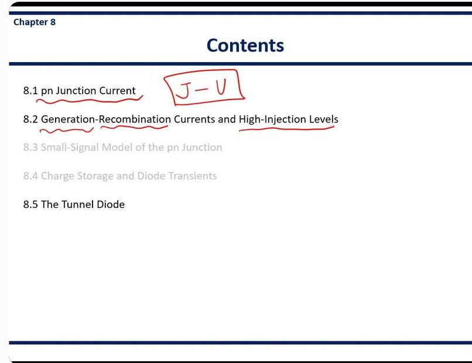
강의 07:58 "이 pn 정션에서의 전류와 전압 특성을 나타내는 방정식, 이걸 유도하는 게 이 챕터의 대부분의 내용이고요. 그리고 디플리션 영역 내부의 필드가 약해짐으로써 … 일렉트론–홀 페어의 제너레이션, 리컴비네이션, 그거에 의한 영향을 고려하는 것이 8.2이고요."
강의 08:28 "그리고 우리는 high-level injection 부분은 다루지 않습니다. 그래서 여러분들은 이번 과목에서 우리가 고려하는 것은 항상 low-level injection 이다, 라고 생각을 하시면 될 것 같고, 그리고 스몰 시그널 부분도 우리가 다루지 않고요. 그리고 터널 다이오드에 대해서 간단히만 언급하고 이번 챕터 마치도록 하겠습니다."
자료에 없음 08:28 범위 확정. 8.2 제목에 있는 High-Injection Levels 는 안 다룬다(밑줄은 쳤지만 말로 뺐다). 회색인 8.3 소신호 모델·8.4 전하 저장도 안 다룬다. 8.5 터널 다이오드는 "간단히만".
★ 시험 범위 — 다루는 것: 8.1 J–V 유도(+ short diode), 8.2 생성·재결합 전류(+ ideality factor), 8.5 터널 다이오드 개념. "항상 low-level injection" 이라는 전제는 5쪽 가정 ③과 연결되므로 가정을 쓰라는 문제에서 빠뜨리지 않는다.
4쪽Charge Flow in a pn Junction — 장벽이 오르내린다
pn junction → diffusion of holes and electrons → space charge region → built-in potential
7장 요약 한 줄이다. p와 n을 붙이면 ① 전자·정공이 반대편으로 확산(diffusion, 많은 데서 적은 데로 퍼짐)하고 ② 경계에 이온만 남은 공간전하 영역(= 공핍층)이 생기고 ③ 그 전하 때문에 내부 전위차 Vbi(built-in potential)가 생긴다.
Bulit-in potential: potential barrier for electrons and holes
Vbi 는 전자와 정공 둘 다에게 넘어야 할 언덕(장벽)이다. 전압을 안 걸면 이 언덕 때문에 더는 넘어가지 못해 전류가 0 이다. (원문 철자 "Bulit" 은 오타, built 가 맞다.)
이 그림은 같은 pn 접합을 세 조건으로 나란히 그린 것이다. 위는 회로와 공핍층 폭 W, 아래는 에너지 밴드(Ec 전도대 바닥, Ev 가전자대 꼭대기, EF 페르미 준위). 왼쪽 Zero bias: EF 가 한 줄로 평평하고 언덕 높이는 eVbi. 가운데 Reverse bias: p 에 −, n 에 + (VR). W 가 넓어지고 언덕이 더 높아진다. EFp, EFn 이 VR 만큼 벌어진다. 오른쪽 Forward bias: p 에 +, n 에 − (Va). W 가 좁아지고 언덕이 낮아져 "Electron flow"(n→p), "Hole flow"(p→n) 화살표가 생긴다.
Condition / Potential barrier
Zero bias: eVbi
Reverse bias: e(Vbi+VR) → increased potential barrier
Forward bias: e(Vbi−Va) → reduced potential barrier
언덕 높이를 표로 정리했다. e 는 전자 하나의 전하량이라, e × 전압 = 에너지가 된다.
역방향은 외부 전압이 내부 전위차와 같은 방향으로 더해져 언덕이 Vbi+VR 로 높아진다.
순방향은 외부 전압이 내부 전위차를 깎아 Vbi−Va 로 낮아진다.
No diffusion of electrons and holes (Zero · Reverse) │ Diffusion of electrons and holes (Forward)
언덕이 그대로이거나 높아지면 넘어가는 캐리어가 없다 → 전류가 (거의) 안 흐른다.
언덕이 낮아지면 다수 캐리어가 넘어가 확산이 다시 시작된다 → 전류가 흐른다. 다이오드가 한쪽 방향으로만 전류를 흘리는 이유가 이 한 줄이다.
판서 08:50~11:58 [판서] 첫 줄 세 단계에 밑줄 · potential barrier 동그라미 · Reverse bias 의 n 쪽에 ⊕, Forward bias 의 p 쪽에 ⊕ · e(Vbi+VR), Forward bias 밑줄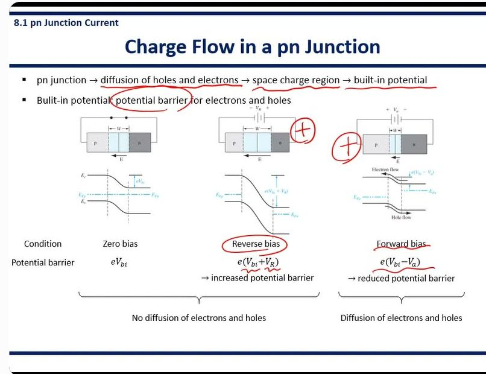
⊕ 두 개가 요점이다.
+ 를 어디에 거느냐로 역방향/순방향이 갈린다: n 에 + 면 역방향, p 에 + 면 순방향.
강의 09:28 "The built-in potential in the pn junction act as a potential barrier for electron and hole. So further diffusions are prevented because of this potential barrier." — 내부 전위가 전자·정공 모두에게 장벽이라 더 이상 확산이 없다.
강의 10:06 "Total potential barrier becomes the built-in potential barrier plus applied the reverse bias. So it becomes more difficult for electron and hole to diffuse into another region."
강의 11:08 "In these two cases, diffusion of electrons and holes are prevented because of high potential barrier. So there also exist high electric field in the depletion region and these field hold back diffusion … On the other hand, in the forward bias condition, the potential barrier is reduced. So diffusion of electron and hole becomes available. … there will be current flowing through the pn junction."
★ 시험 포인트 — 장벽 높이 세 개(eVbi, e(Vbi+VR), e(Vbi−Va))와 "역방향·0 은 확산 없음, 순방향은 확산 → 전류". 전압 극성(어느 쪽에 +)을 같이 쓴다.
5쪽Derivation of the Ideal Current-Voltage Relationship — 유도의 가정 6개
Basic assumptions to derive the Ideal Current-Voltage Relationship
이상적인 전류–전압 식을 유도하기 위해 깔고 가는 기본 가정들. "이상적(ideal)"이란 말은 이 가정들이 다 맞는다고 치겠다는 뜻이다. 8.2 는 이 가정이 깨지는 경우다.
- The abrupt depletion layer approximation: the space charge regions have abrupt boundaries, and the semiconductor is neutral outside of the depletion region
① 공핍층 경계는 칼로 자른 듯 딱 끊긴다(abrupt = 급격한). 공핍층 바깥은 전하가 0 인 중성(neutral) 영역이다. 7장에서 전기장을 그릴 때 쓴 그 가정이다.
- The Maxwell-Boltzmann approximation (E − EF ≫ kT)
② 볼츠만 근사. 페르미–디랙 확률 식이 에너지 차이가 kT(열에너지, 상온 약 0.026 eV)보다 훨씬 크면 단순한 지수 함수 exp(−(E−EF)/kT) 로 바뀐다. 4장에서 n₀, p₀ 를 구할 때 쓴 것이다. 이 덕분에 뒤에서 농도 식이 전부 exp 꼴이 된다.
- Low level injection (p₀ ≫ δn(t), n₀ ≫ δn(t)) & complete ionization (n₀ ≈ Nd, p₀ ≈ Na)
③ 저준위 주입(low-level injection): 넘어온 과잉 캐리어 δn 이 그 동네 다수 캐리어(p₀ 또는 n₀)보다 훨씬 적다. 그래서 다수 캐리어 농도는 사실상 안 바뀐다.
완전 이온화(complete ionization): 넣은 도펀트가 전부 전자/정공을 내놓았다. 그래서 n₀ ≈ Nd, p₀ ≈ Na.
- The total current is constant throughout the entire pn structure
④ 전체 전류는 소자 어디서 재도 같다. 전선에 흐르는 전류가 어디서나 같은 것과 같다. 다만 전자 몫과 정공 몫의 비율은 위치마다 바뀔 수 있다.
- The individual electron and hole currents are continuous functions through the pn structure
⑤ 전자 전류, 정공 전류 각각은 끊기지 않고 이어지는 함수다. 어디선가 갑자기 뚝 끊기거나 튀지 않는다.
- The individual electron and hole currents are constant through the depletion regions
⑥ 공핍층 안에서는 전자 전류도 정공 전류도 각각 일정하다. 공핍층이 아주 얇아 그 안에서 생기거나 사라지는 캐리어가 없다고 보는 것이다. (이 가정이 깨지는 것이 8.2 생성·재결합 전류다.)
이 그림은 왼쪽에 순방향 Va 를 건 pn 접합(공핍층 폭 W, 전기장 E 는 n→p 방향), 오른쪽에 위치 x 에 따른 전류 밀도를 그린 것이다. 맨 위 수평선이 JTotal(어디서나 일정). 그 아래 실선이 소수 캐리어 확산 전류(Electron diffusion current 는 p 쪽, Hole diffusion current 는 n 쪽), 점선이 다수 캐리어 전류(Majority carrier hole current 는 p 쪽, electron current 는 n 쪽)다. 공핍층(−xp~xn) 안에서는 두 성분이 평평하다. Jn(−xp), Jp(xn) 두 점이 찍혀 있다.
판서 11:58~15:23 [판서] 가정 문장마다 밑줄 · Boltzmann 옆에 "n₀ p₀" · "I by electron + I by holes" · 그림의 JTotal 수평선과 각 성분에 동그라미·화살표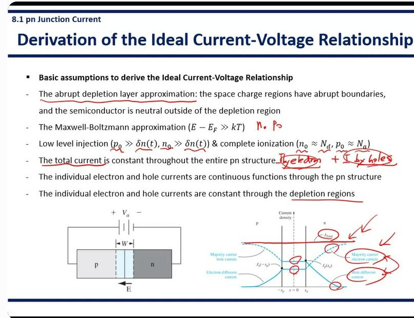
강의 12:36 "The next assumption is the Boltzmann approximation, which was employed when we obtained the expression of the charge carrier concentration, n₀, p₀." — 판서의 "n₀ p₀" 메모가 이 말이다. 4장에서 n₀, p₀ 식을 얻을 때 쓴 근사.
강의 12:55 "Low-level injection is the condition when the majority carrier concentration is larger than the excess minority carrier concentration. And complete ionization describes the situation that all the donor atoms donate electrons and all the acceptor atoms accept electrons."
강의 13:35 "The total current is due to the electron, so current by electron plus current by hole. … the individual electron and hole current change in the pn structure. But the total current, the summation of those two components is constant throughout the entire pn structure. … this constant line represents the total current."
강의 15:03 "In the depletion region, each electron and hole current component is constant." — 이 가정까지 깔고 유도를 시작한다.
★ 시험 포인트 — 가정 6개를 순서대로 쓰기. 판서로 가장 크게 짚은 건 ④ 전체 전류 일정(그림의 JTotal 수평선에 화살표 두 개)이다. "개별 성분은 위치마다 바뀌지만 합은 일정"을 그림과 함께 설명할 수 있어야 한다. 가정 ⑥(공핍층 안 일정)은 14쪽에서 깨진다.
6쪽Boundary Condition — 열평형에서 n 쪽 전자와 p 쪽 전자의 관계
이 그림은 위에 표, 가운데 pn 접합, 아래에 전자 에너지(Ec) 곡선이다. 표: p 영역 다수 캐리어 pp0 = Na, 소수 캐리어 np0; n 영역 다수 캐리어 nn0 = Nd, 소수 캐리어 pn0. 공핍층에는 "Na negative charge"(−), "Nd positive charge"(+). 아래 곡선은 p 쪽이 높고 n 쪽이 낮으며 그 높이 차가 eVbi — "Potential barrier for electrons".
What is the relationship between the electron concentrations in the n-region and p-region?
질문: n 영역의 전자 농도와 p 영역의 전자 농도는 어떤 관계인가?
첨자 읽는 법: nn0 = n 영역의 전자(n), 열평형(0). np0 = p 영역의 전자, 열평형. 앞 글자가 무엇(전자/정공), 첨자 첫 글자가 어디(영역)다.
Vbi = (kT/e) ln(NdNa/ni²) = Vt ln(NdNa/ni²) → ni²/(NdNa) = exp(−eVbi/kT)
7장의 Vbi 식에서 출발한다. Vt = kT/e = 열전압(상온 0.0259 V).
양변을 Vt 로 나누고 ln 을 풀면(지수를 씌우면) 오른쪽 꼴이 된다. ln 을 뒤집으면 exp 가 되는 것뿐이다. 부호가 −가 된 건 분수를 뒤집었기 때문이다.
Assume complete ionization, nn0 ≈ Nd
In the p-region, using the relationship n₀p₀ = ni², np0 ≈ ni²/Na
완전 이온화로 n 쪽 전자 = Nd.
p 쪽 전자(소수)는 질량 작용 법칙 n₀p₀ = ni²(4장, 전자 농도 × 정공 농도 = 일정)로 구한다. p 쪽 정공이 Na 이니 전자는 ni²/Na.
⇒ ni²/(NdNa) = np0/nn0 = exp(−eVbi/kT)
→ np0 = nn0 exp(−eVbi/kT)
ni²/(NdNa) 를 (ni²/Na) ÷ Nd 로 쪼개 보면 np0/nn0 이다. 그래서 결론:
p 쪽 전자 = n 쪽 전자 × exp(−eVbi/kT).
뜻: n 쪽 전자 중 높이 eVbi 의 언덕을 넘을 만큼 에너지가 큰 녀석들의 비율만큼만 p 쪽에 있다. 언덕이 높을수록 지수적으로 적다.
: the relationship between the electron concentration in the n-region (majority carrier) and in the p-region (minority carrier) in thermal equilibrium
이 식은 열평형(전압 안 건 상태)에서 n 쪽 다수 캐리어(전자)와 p 쪽 소수 캐리어(전자)를 잇는 관계다. 다음 쪽에서 언덕 높이를 Vbi → Vbi−Va 로 바꾸기만 하면 순방향 경계 조건이 된다.
판서 15:23~19:09 [판서] pp0=Na, nn0=Nd 동그라미 · 표의 e, h 표시 · 곡선 위 np0, 아래 nn0 동그라미 · 식 네모 · "Junction law"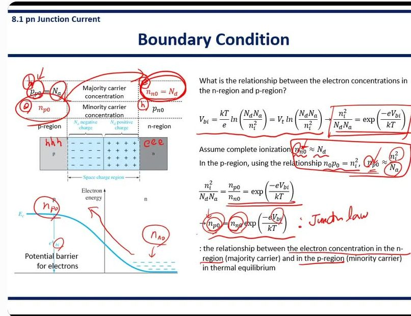
강의 16:11 "What we are going to do is that we will find the equation that can relate the electron concentration in the n region and electron concentration in the p region." — 질문 그대로 시작한다.
강의 18:33 "We have nn0 here as a majority carrier in the n region, and this electron pass through the potential barrier, Vbi, and it reduced down to np0 as the minority carrier in the p region. So this is also called as junction law or law of junction."
자료에 없음 18:33 식의 그림 해석: n 쪽 다수 전자 nn0 가 높이 eVbi 의 언덕을 넘으며 exp(−eVbi/kT) 배로 줄어 p 쪽 소수 전자 np0 가 된다. 판서에서 곡선 위(np0)와 아래(nn0)에 동그라미를 친 이유다. 다른 이름 law of junction.
★ 시험 포인트 — np0 = nn0exp(−eVbi/kT) (junction law) 유도: Vbi 식 뒤집기 → 완전 이온화 nn0 ≈ Nd → 질량 작용 법칙 np0 = ni²/Na. 판서 네모가 쳐진 두 식이 답안의 핵심 줄이다.
7쪽Forward Bias: Boundary Condition — 경계의 소수 캐리어가 exp(eVa/kT) 배
이 그림은 순방향 Va(p 에 +)를 건 pn 접합이다. 외부 전기장 Eapp 은 p→n 방향, 내부 전기장 E 는 n→p 방향이라 서로 깎는다. 양 옆 중성 영역 폭은 Wp, Wn. 아래 밴드 그림은 언덕 높이가 e(Vbi−Va) 로 줄었고, EFn 과 EFp 가 eVa 만큼 어긋나 있다.
- Forward bias (positive voltage, Va, is applied to the p-region with respect to the n-region → the potential barrier is reduced (Vbi → Vbi − Va) & the net electric field in the space charge region is reduced
순방향 = p 쪽에 + 전압 Va 를 거는 것. 그러면 ① 언덕이 Vbi 에서 Vbi−Va 로 낮아지고 ② 공핍층 안 알짜 전기장(내부 − 외부)도 약해진다. 전기장이 약해지면 붙잡아 두는 전하가 덜 필요하므로 공핍층도 좁아진다.
- Diffusion of majority carriers: majority carrier electrons from the n-region are injected across the depletion region into the p-region & Majority carrier holes from the p-region are injected across the depletion region into the n-region → Current generation
다수 캐리어의 확산이 다시 시작된다. n 쪽 전자가 공핍층을 건너 p 쪽으로, p 쪽 정공이 공핍층을 건너 n 쪽으로 주입(inject)된다. 이렇게 넘어가는 흐름이 곧 전류다.
Without a forward bias, np0 = nn0 exp(−eVbi/kT)
앞 쪽의 열평형 관계를 다시 쓴 것이다.
np = nn0 exp(−e(Vbi−Va)/kT) = nn0 exp(−eVbi/kT) exp(+eVa/kT)
→ np = np0 exp(eVa/kT)
순방향이면 언덕 높이만 Vbi−Va 로 바꿔 넣는다. 열평형이 아니므로 0 첨자를 뗀 np 로 쓴다.
exp 를 둘로 쪼개면 앞부분이 그대로 np0 이다. 결론: p 쪽 경계의 전자 농도 = 열평형 값 × exp(eVa/kT). 0.6 V 만 걸어도 exp(0.6/0.0259) ≈ 1010 배다.
: the minority electron concentration in p-region edge is increased from its thermal equilibrium value
p 영역 가장자리(edge, x = −xp)의 소수 전자 농도가 열평형 값보다 늘어난다. "가장자리"가 중요하다. 이 식은 공핍층 바로 바깥 한 점의 값이다.
Similarly, → pn = pn0 exp(eVa/kT)
정공도 똑같다. n 쪽 경계(x = xn)의 정공 농도 = 열평형 값 × exp(eVa/kT).
이 그림은 소수 캐리어 농도를 위치에 따라 그린 것이다. 아래 점선 np0(p 쪽), pn0(n 쪽)은 "Minority carrier densities without a forward bias"(열평형). 위로 찍힌 점 np(−xp) = np0exp[eVa/kT], pn(xn) = pn0exp[eVa/kT] 가 "Minority carrier densities with a forward bias". 화살표 "Hole injection"(→), "Electron injection"(←).
판서 19:09~23:10 [판서] 첫 문단 밑줄 · np0, nn0 동그라미 · 두 번째 식 전체 네모, −Va 동그라미 · np = np0exp(eVa/kT) 네모 · 그래프의 두 점과 np0, pn0 동그라미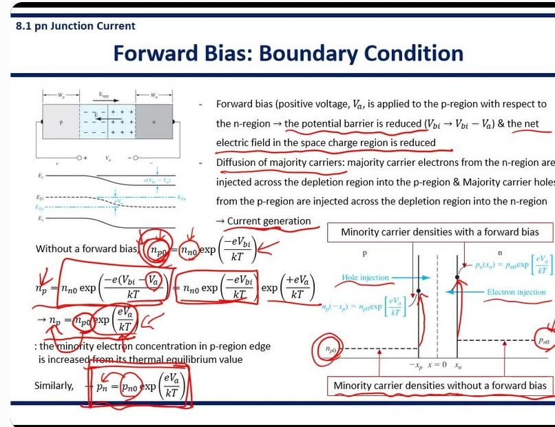
강의 20:30 "Here we use np instead of np0 because this is not in thermal equilibrium anymore, because we apply a positive bias. And we can split this exponential function into two, and the first part becomes np0 according to this equation."
강의 21:12 "This equation shows the minority carrier electron concentration in the p-region … is increased from np0 to np because of the diffused electrons from the n-region. And this was increased by the applied forward bias."
강의 21:44 "Without forward bias, we have a low minority carrier concentration … which is pretty low. And according to this equation, this np0 was increased to this value because of the diffused electrons from the n-region."
강의 23:04 "So we obtain the boundary values for the minority carrier concentration in each region." — 이 두 식이 다음 쪽 미분방정식의 경계값이 된다.
★ 시험 포인트 — np(−xp) = np0exp(eVa/kT), pn(xn) = pn0exp(eVa/kT). 유도는 6쪽 식에서 Vbi → Vbi−Va 한 줄. "0 첨자를 떼는 이유 = 열평형이 아니라서"까지 말로 짚었다.
8쪽Minority Carrier Distribution (1) — 앰비폴라 식을 줄인다
이 그림은 순방향을 건 pn 접합에서 전자(빨강 ⊖)는 n→p 로, 정공(파랑 ⊕)은 p→n 으로 넘어가는 모습이다. 같은 전자라도 n 쪽에선 "Majority carrier", p 쪽에 넘어가면 "Minority carrier" 로 이름이 바뀐다.
Diffused electrons in the p-region & diffused holes in the n-region → excess minority carriers (δn, δp)
p 쪽으로 넘어간 전자, n 쪽으로 넘어간 정공은 그 동네에서 원래보다 많아진 소수 캐리어, 즉 과잉 소수 캐리어(excess minority carrier) δn, δp 가 된다. 6장에서 빛으로 만들던 과잉 캐리어를 여기선 전압으로 만든 것이다.
→ Ambipolar transport equation: the behavior of excess carriers as a function of time and spatial coordinate)
과잉 캐리어가 시간과 위치에 따라 어떻게 변하는지는 6장의 앰비폴라 수송 방정식(ambipolar transport equation)으로 푼다.
- Ambipolar transport equation for excess minority carrier holes in the n-region (from Chapter 6)
Dp ∂²(δpn)/∂x² + μpE ∂(δpn)/∂x + g′ − δpn/τp0 = ∂(δpn)/∂t , where δpn = pn − pn0 [Excess carrier by diffusion]
n 영역의 과잉 정공 δpn 에 대한 6장 식이다. 항마다 뜻:
① Dp∂²/∂x² = 확산으로 들고 남 ② μpE∂/∂x = 전기장(drift)으로 들고 남 ③ g′ = 외부 생성(빛 등) ④ δpn/τp0 = 재결합으로 사라짐(τp0 = 소수 캐리어 수명) ⑤ 우변 = 시간에 따른 변화.
δpn = 지금 농도 − 열평형 농도 = 과잉분.
For x > xn, the E-field is zero & g′ = 0 (no generation). & Assume steady state, then ∂(δpn)/∂t = 0
공핍층 바깥(x > xn, 중성 영역)이라 전기장 0 → ②항 삭제. 빛을 안 쪼이니 g′ = 0 → ③항 삭제. 전압을 걸고 충분히 기다린 정상 상태(steady state)라 시간 변화 0 → ⑤항 삭제.
∂²(δpn)/∂x² − δpn/Lp² = 0 , where Lp² = Dpτp0 (x > xn)
남은 ①, ④항을 Dp 로 나누면 이 꼴이 된다. Lp = √(Dpτp0) 는 소수 캐리어 확산 길이(diffusion length) — 정공이 재결합해 사라지기 전까지 평균적으로 퍼져 가는 거리다.
- Similarly, ∂²(δnp)/∂x² − δnp/Ln² = 0 , where Ln² = Dnτn0 (x < xp)
p 쪽 과잉 전자도 똑같은 식이다. (원문 범위 표기 x < xp 는 x < −xp 를 뜻한다. p 쪽 경계가 −xp 이기 때문이다.)
판서 23:10~26:21 [판서] Minority carrier·Majority carrier 동그라미 · Va 동그라미 · 앰비폴라 식 밑줄과 빨간 V 표시 · δpn 동그라미 · "E-field is zero", "g′ = 0", "steady state" 밑줄 · Lp², Dpτp0 밑줄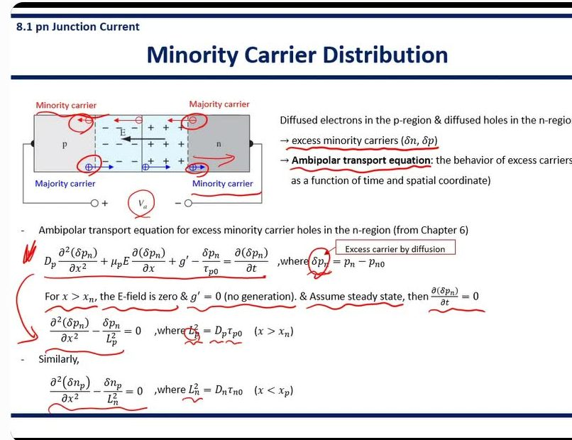
강의 23:47 "Once they enter the other region after passing through the depletion region, they become a minority carrier. So this is really important. So diffused electron or diffused hole are considered as the excess minority carrier."
강의 24:18 "Ambipolar transport equation tells us the behavior of the excess carriers as a function of time and spatial coordinate. … We start from the ambipolar transport equation for holes in the n-region in order to find the behavior of the diffused hole in the n-region."
강의 25:12 "Outside of the depletion region, the electric field is 0. And there's no generation outside of this depletion region. And also if we assume the steady state condition, then we can set this term to 0. If we assume those three conditions, then we can simplify the ambipolar transport equation like this. … Lp is the hole diffusion length."
★ 시험 포인트 — "건너간 순간 소수 캐리어가 된다 — really important"(23:47). 앰비폴라 식에서 지우는 항 세 개와 그 이유(E = 0, g′ = 0, 정상 상태)와 Lp = √(Dpτp0) 의 이름(hole diffusion length).
9쪽Minority Carrier Distribution (2) — 지수 함수로 줄어든다
∂²(δpn)/∂x² − δpn/Lp² = 0 (x > xn) General solution: δpn(x) = pn(x) − pn0 = Aex/Lp + Be−x/Lp
∂²(δnp)/∂x² − δnp/Ln² = 0 (x < xp) General solution: δnp(x) = np(x) − np0 = Cex/Ln + De−x/Ln
"두 번 미분하면 자기 자신(÷L²)이 되는 함수"를 찾는 문제다. 답은 e+x/L 과 e−x/L 두 개, 그 합이 일반해(general solution)다. A, B, C, D 는 아직 모르는 상수로, 경계 조건으로 정한다.
- The boundary conditions for the total minority carrier concentrations
pn(xn) = pn0 exp(eVa/kT) np(−xp) = np0 exp(eVa/kT)
pn(x → +∞) = pn0 np(x → −∞) = np0
경계 조건(boundary condition) 네 개.
윗줄 두 개 = 7쪽에서 구한 공핍층 가장자리 값.
아랫줄 두 개 = 접합에서 아주 먼 곳은 영향을 안 받아 열평형 값 그대로.
먼 곳 조건 때문에 커지는 항이 살아남을 수 없다 → n 쪽은 A = 0, p 쪽은 D = 0. 남은 B, C 는 가장자리 값으로 정한다.
- The excess carrier concentrations
δpn(x) = pn(x) − pn0 = pn0[exp(eVa/kT) − 1] exp((xn − x)/Lp)
δnp(x) = np(x) − np0 = np0[exp(eVa/kT) − 1] exp((xp + x)/Lp)
경계 조건을 넣어 구한 과잉 소수 캐리어 분포.
앞부분 pn0[exp(eVa/kT)−1] = 가장자리에서의 과잉분(전체 − 열평형). 뒷부분 exp((xn−x)/Lp) = 가장자리에서 멀어질수록(x 가 커질수록) 줄어드는 지수 감쇠.
(두 번째 식 지수의 분모 Lp 는 슬라이드 오기로, Ln 이 맞다. p 쪽 전자이므로 전자의 확산 길이를 쓴다.)
이 그림은 위아래 두 장이다. 위: 경계 조건만 찍은 그림(가장자리 두 점 + 먼 곳 점선 np0, pn0, Hole injection / Electron injection). 아래: 식을 푼 결과. 가장자리에서 가장 높고 바깥으로 갈수록 점선(열평형)까지 휘어 내려온다. 빨간 글씨 "Exponentially decay with distance : Recombination with majority carriers".
Exponentially decay with distance : Recombination with majority carriers
거리에 따라 지수적으로 줄어드는 이유 = 넘어간 소수 캐리어가 그 동네 다수 캐리어와 재결합해 하나씩 사라지기 때문이다. n 쪽으로 넘어간 정공은 n 쪽에 잔뜩 있는 전자와 만나 없어진다.
판서 26:21~29:50 [판서] 두 미분방정식 큰 동그라미 → 아래 결과식으로 화살표 · A, B, C, D 동그라미 · 경계 조건 네 식 밑줄 · 그래프의 경계 점, 먼 곳 화살표 · 아래 그래프 전체 큰 동그라미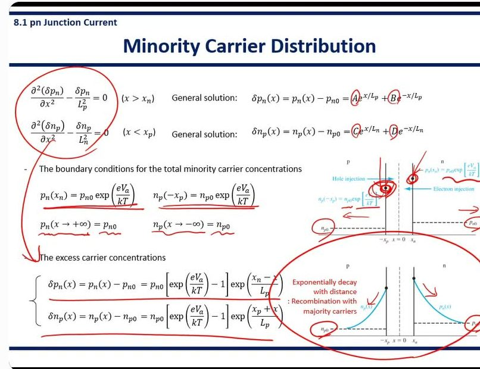
강의 26:21 "We have these two second-order differential equations. And by solving these … we can find the general solutions. … by applying the boundary condition we can find these constants to find the particular solution."
강의 27:29 "We also have another boundary condition. So that is the excess minority carrier recombined with the majority carrier. So the excess minority carrier concentration eventually goes to zero as it diffuses inside. So the total hole concentration in the n region far from the depletion region has to be the same as the hole concentration in thermal equilibrium."
자료에 없음 27:29 "먼 곳 = 열평형 값"이라는 경계 조건의 물리적 이유를 재결합으로 댔다. 과잉 소수 캐리어는 들어가면서 다수 캐리어와 재결합해 0 이 되므로, 전체 농도는 결국 열평형 값으로 "saturate"한다.
강의 29:08 "The excess minority carrier concentration exponentially decay with distance because diffused excess carriers recombine with the majority carrier. … total minority carrier concentration becomes the thermal equilibrium minority carrier concentration."
★ 시험 포인트 — 경계 조건 4개 → A = 0, D = 0 → 지수 감쇠 분포. 감쇠 이유는 "다수 캐리어와의 재결합"(슬라이드 빨간 글씨 + 말 두 번). 두 번째 결과식 분모 Lp 는 Ln 의 오기다(판서에서도 고치지 않음).
10쪽Ideal pn Junction Current (1) — 경계에서 기울기를 잰다
Total current: due to diffusion of minority carrier
- hole diffusion current (at x = xn) + electron diffusion current (at x = −xp)
전체 전류 = 소수 캐리어의 확산 전류로 계산한다. n 쪽 가장자리(x = xn)의 정공 확산 전류 + p 쪽 가장자리(x = −xp)의 전자 확산 전류.
왜 두 점 값을 그냥 더해도 되나? 5쪽 가정 ⑥ — 공핍층 안에서 각 전류가 일정하므로, xn 의 정공 전류 = −xp 의 정공 전류다. 그래서 한 단면에서 둘을 더한 것과 같다.
(neglect any minority carrier drift current component because we assume the electric field is zero at the space charge edges)
소수 캐리어의 drift(전기장에 끌려가는) 전류는 무시한다. 공핍층 가장자리에서는 전기장이 0 이라고 가정했기 때문이다. 게다가 소수 캐리어는 수가 적어 drift 로 실어 나르는 양도 작다.
Jp(xn) = −eDp dpn(x)/dx |x=xn = −eDp d(δpn)/dx |x=xn
5장의 확산 전류 식: 정공 확산 전류 = −e × 확산 계수 × 농도 기울기. 기울기가 가파를수록 많이 흐른다.
pn = pn0 + δpn 인데 pn0 는 상수라 미분하면 0 → 과잉분 δpn 만 미분하면 된다.
Jp(xn) = (eDppn0/Lp)[exp(eVa/kT) − 1]
9쪽의 δpn(x) 를 미분하면 지수 함수 앞에 −1/Lp 가 나오고, x = xn 을 넣으면 exp(0) = 1. 앞의 −부호와 만나 +가 된다. 결과: 정공 확산 전류 = (eDppn0/Lp) × [exp(eVa/kT) − 1].
Similarly, Jn(−xp) = eDn dnp(x)/dx |x=−xp = (eDnnp0/Ln)[exp(eVa/kT) − 1]
전자는 전하가 −라서 확산 전류 식 앞 부호가 +다(5장). 결과도 같은 모양: (eDnnp0/Ln) × [exp(eVa/kT) − 1].
이 그림은 위에 전류 밀도(맨 위 JTotal = Jp(xn) + Jn(−xp), 가장자리 두 점의 Electron diffusion current, hole diffusion current), 아래에 9쪽의 소수 캐리어 분포 곡선과 두 식을 다시 그린 것이다. 가장자리 점에서 곡선의 기울기가 곧 그 점의 확산 전류다.
판서 29:50~33:14 [판서] "due to diffusion of minority carrier" 밑줄 · x = xn, −xp 밑줄 · 식의 e, Dp, dpn/dx, d(δpn)/dx 동그라미 · Total current 동그라미, 경계 두 점 동그라미 · 아래 분포 곡선 시작점 동그라미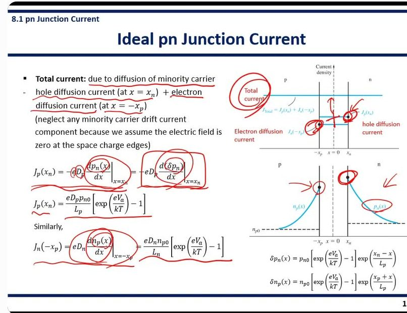
강의 30:03 "In the pn junction, the total current in the pn junction is due to the diffusion of minority carriers. So don't be confused that the current in the pn junction is not due to the drift of charge carriers, but the diffusion of charge carriers, in particular diffusion of minority carriers."
강의 31:24 "This is a basic equation for diffusion current, elemental charge and diffusion coefficient and density gradient. And we can write this equation … using the excess hole concentration instead of the hole concentration, because the density gradient in this n region is because of the excess hole concentration."
자료에 없음 30:56 말실수 주의. 처음에 "neglect any minority carrier diffusion current component"라고 했다가 31:08 에 "drift current component"로 고쳐 말했다. 슬라이드가 맞다 — 무시하는 것은 소수 캐리어의 drift 다.
★ 시험 포인트 — "pn 접합 전류 = 소수 캐리어의 확산 전류, drift 아님 — don't be confused"(30:11). Overview(05:49)에 이어 두 번째. 미분할 때 pn 대신 δpn 을 써도 되는 이유(pn0 는 상수 → 기울기는 과잉분 때문)를 말로 짚었다.
11쪽Ideal pn Junction Current (2) — 이상 다이오드 식
Ideal diode equation
J = Jp(xn) + Jn(−xp) = [eDppn0/Lp + eDnnp0/Ln][exp(eVa/kT) − 1]
이상 다이오드 식(ideal diode equation). 앞 쪽에서 구한 두 확산 전류를 더하면 [ ] 공통 인수가 묶여 나온다.
= Js[exp(eVa/kT) − 1] where, Js = [eDppn0/Lp + eDnnp0/Ln]
앞의 상수 덩어리를 Js 로 이름 붙였다. 식 전체 모양: J = Js[exp(Va/Vt) − 1].
Js 안의 pn0 = ni²/Nd, np0 = ni²/Na 이므로 Js 는 ni² 에 비례하고 도핑에 반비례한다.
이 그림은 오른쪽 위에 p–n 블록과 다이오드 기호(전류 J 는 p→n, Va 는 p 쪽 +), 그 옆에 J–Va 곡선이다. 오른쪽(Va > 0)은 지수적으로 치솟고, 왼쪽(Va < 0)은 −Js 에 붙어 거의 평평하다. 아래는 세로축을 ln(J) 로 바꾼 그래프 — 직선이 되고, 직선을 Va = 0 으로 늘이면(점선) 절편이 Js 다.
If the Va becomes negative (reverse bias) by a few kT/e V
→ The reverse-biased current density becomes independent of the reverse-biased voltage
역방향으로 kT/e(≈ 0.026 V)의 몇 배만 걸어도 exp 항이 0 에 가까워져 J ≈ −Js. 그 뒤로는 역전압을 아무리 키워도 전류가 그대로다(전압과 무관).
Js: the reverse-saturation current density
그래서 Js 의 이름이 역포화 전류 밀도(reverse-saturation current density)다. 역방향에서 "포화"되어 더 안 늘어나는 값이라는 뜻이다.
If the Va becomes positive by more than a few kT/e V → J ≈ Js[exp(eVa/kT)]
순방향으로 몇 kT/e 이상 걸면 exp 항이 1 보다 훨씬 커서 −1 을 버린다. 그러면 J 는 순수한 지수 함수. ln 을 씌우면 ln J = ln Js + Va/Vt — 기울기 1/Vt 인 직선이 된다(아래 그래프).
판서 33:14~36:47 [판서] J = Jp(xn)+Jn(−xp) 큰 동그라미 → Js[exp(eVa/kT)−1] 로 화살표 · "J ~ −Js" · independent 밑줄 · 그래프 위 ↗ →(순방향), ←(역방향) 화살표, Js 동그라미 · ln(J) 그래프 옆 "pn junction diode"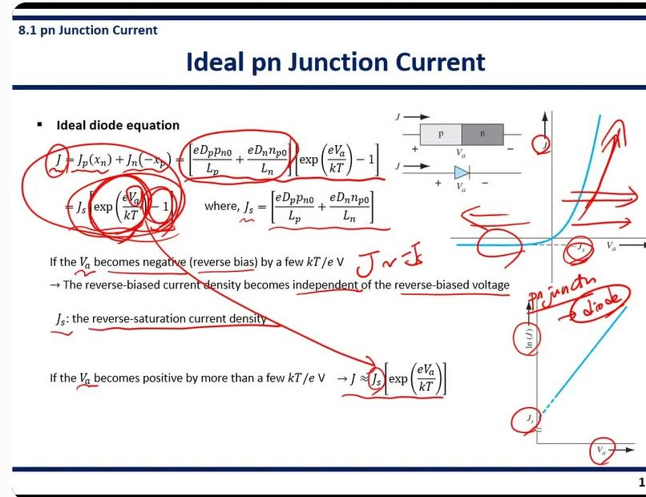
강의 33:31 "The total current in the pn junction can be found by adding the hole diffusion current at the edge of the n region and electron diffusion current at the edge of the p region. … the first part we define it as a new parameter, which is Js. … this is the ideal pn junction current equation."
강의 34:36 "When Va becomes negative, that means this is in a reverse bias condition. Then this exponential term becomes negligible compared to this minus one. Then the total current can be approximated to minus Js. … So it is saturated to minus Js. That's why Js is called as the reverse saturation current density."
강의 35:22 "That's why the pn junction diode can only conduct current in one direction. Forward bias can conduct current, but in reverse bias condition, it does not conduct any current. 물론 current 가 흐르지만 Js is very small, so we can consider it does not conduct current in a reverse bias condition."
자료에 없음 35:22 다이오드가 한 방향으로만 전류를 흘리는 이유를 이 식으로 정리했다(정류 작용). 역방향에서도 −Js 가 흐르긴 하지만 아주 작아 "안 흐른다"고 본다.
강의 36:00 "When Va becomes positive by more than a few kT over e, we can neglect this minus one. … by plotting ln J with respect to Va, then we can find the reverse saturation current density from the y-intercept."
자료에 없음 36:17 ln J–Va 그래프의 쓰임: 측정한 I–V 로 직선을 그어 y 절편에서 Js 를 뽑는다. 슬라이드엔 그래프만 있고 이 용도는 말로만 했다.
★ 시험 포인트 — 이상 다이오드 식과 Js 식, Js 의 이름이 붙은 이유(역방향에서 포화), 순방향 근사(−1 버림), ln J 그래프의 절편 = Js. 이 장의 목표 식이다.
12쪽Summary of Physics — 다이오드 전류 이야기 한 장
Forward bias applied → lower the potential barrier → diffusion of electrons and holes → Electrons and holes are injected across the space charge region → the injected carriers become minority carriers → minority carriers diffuse from the junction and recombine with majority carriers
8.1 전체를 화살표 한 줄로 줄였다.
순방향 → 언덕이 낮아짐 → 전자·정공 확산 → 공핍층을 건너 주입 → 건너간 쪽에서 소수 캐리어가 됨 → 접합에서 멀어지며 확산하다 다수 캐리어와 재결합.
서술형으로 "순방향 전류가 흐르는 원리를 쓰라"고 하면 이 사슬을 그대로 쓴다.
Minority carrier diffusion current densities
(x ≥ xn) Jp(x) = (eDppn0/Lp)[exp(eVa/kT) − 1] exp((xn − x)/Lp)
(x ≤ −xp) Jn(x) = (eDnnp0/Ln)[exp(eVa/kT) − 1] exp((xp + x)/Lp)
10쪽은 가장자리 한 점의 값이었고, 여기는 모든 위치 x 에서의 소수 캐리어 확산 전류다. 가장자리에서 최대, 멀어질수록 지수적으로 줄어든다(9쪽 분포를 미분했으니 같은 지수가 붙는다). 두 번째 식 지수의 Lp 는 역시 Ln 이 맞다.
이 그림은 위치에 따른 전류 성분이다. 맨 위 JTotal(일정). 실선 = 소수 캐리어 확산 전류(가장자리에서 크고 멀어지며 0 으로), 점선 = 다수 캐리어 전류(멀어질수록 커져 결국 전체를 다 떠맡음). 두 성분의 합은 어디서나 JTotal 이다.
Drift of majority carriers: supply carriers to diffuse or recombine
다수 캐리어의 drift가 하는 일 = 재료 공급. 반대편으로 넘어가 확산할 캐리어, 그리고 넘어온 소수 캐리어와 재결합해 줄 캐리어를 전극 쪽에서 실어 온다.
Neutral regions far from the junction: majority carrier drift
접합에서 먼 중성 영역: 소수 캐리어는 다 재결합해 없어졌으니 전류는 전부 다수 캐리어 drift 가 나른다.
Neutral regions near the space charge region: majority carrier drift + minority carrier diffusion
공핍층 근처 중성 영역: 다수 캐리어 drift + 소수 캐리어 확산이 섞여서 전체 전류를 이룬다. 위치에 따라 둘의 몫만 바뀔 뿐 합은 같다(5쪽 가정 ④).
판서 36:47~41:06 [판서] 첫 문단 사슬 전부 밑줄 · Jp(x), Jn(x) 식 밑줄, Jn(x) 동그라미 · 그래프의 Majority carrier 전류(점선)와 diffusion current 에 큰 동그라미·화살표 · "majority carrier drift" 동그라미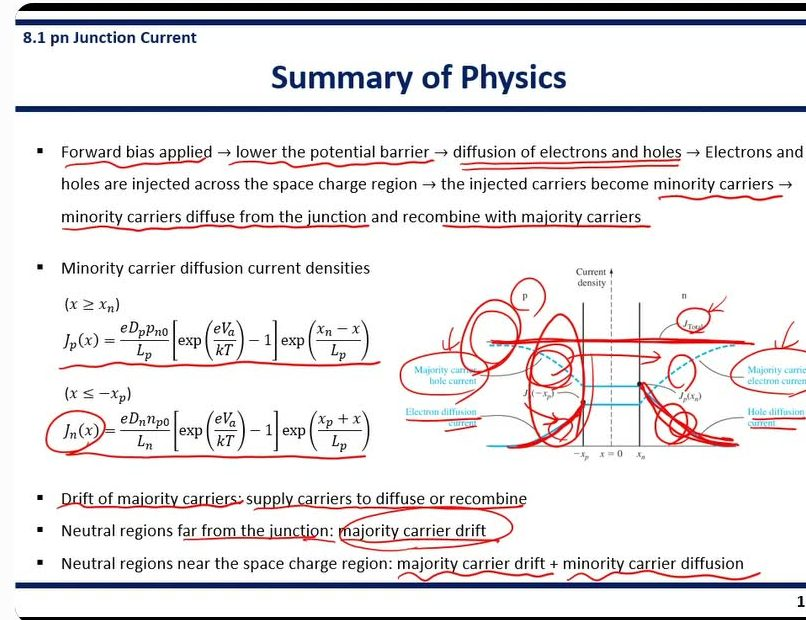
강의 36:47 "When we apply a forward bias, then it lowers the potential barrier of the pn junction, and diffusion of electron and hole become available. And electron and hole are injected across the space charge region, and they become minority carrier. So, because they are considered as excess minority carrier, that's why we employ the ambipolar transport equation … And minority carrier diffuse from the junction, and they recombine with majority carrier."
강의 38:46 "They are exponentially decaying because they recombine with majority carrier once they enter the p or n region. But based on our assumption, we have a constant current density throughout the entire pn structure. So to make the total current constant … there should be other current component, which is the majority carrier current component."
강의 39:37 "We continuously need a majority carrier around the junction because we consume majority carrier to recombine with the diffused minority carrier and also majority carriers are diffused into the other region. So that's why we continuously need a supply of the majority carrier and these majority carriers are supplied by the drift of the majority carrier."
자료에 없음 39:37 다수 캐리어가 왜 계속 공급돼야 하는가의 두 이유: ① 넘어온 소수 캐리어와 재결합하느라 소모 ② 자신도 반대편으로 확산해 넘어감. 이 소모분을 먼 곳에서 drift 로 실어 온다. 슬라이드의 "supply carriers to diffuse or recombine" 을 풀어 말한 것.
★ 시험 포인트 — 첫 문단 사슬(장벽↓ → 확산 → 주입 → 소수 캐리어 → 확산 → 재결합)을 판서로 전부 밑줄. 서술형 그대로 나올 문장이다. 그리고 "전체 전류 일정을 맞추려고 다수 캐리어 전류가 생긴다"는 그림 해석.
13쪽The "Short" Diode — 중성 영역이 짧으면
The "short" diode: one of the n and p region is shorter than minority carrier diffusion length — Wn ≪ Lp
짧은 다이오드(short diode) = n 이나 p 중성 영역 하나가 소수 캐리어 확산 길이보다 훨씬 짧은 다이오드. 예: n 영역 폭 Wn 이 정공 확산 길이 Lp 보다 훨씬 작다.
지금까지(long diode)는 중성 영역이 무한히 길다고 봤는데, 실제 소자는 짧은 경우가 많다.
∂²(δpn)/∂x² − δpn/Lp² = 0 (x > xn) → δpn(x) = pn(x) − pn0 = Aex/Lp + Be−x/Lp
출발하는 미분방정식과 일반해는 8~9쪽과 똑같다. 달라지는 것은 경계 조건뿐이다.
Boundary conditions pn(xn) = pn0 exp(eVa/kT) & pn(x = xn + Wn) = pn0 (Ohmic contact exist)
가장자리 조건은 그대로. 그런데 "먼 곳 = 무한대" 대신 xn + Wn 에 금속 전극(오믹 접촉, Ohmic contact)이 있다. 금속과 닿는 면에서는 과잉 캐리어가 즉시 사라진다고 보므로 거기서 농도 = 열평형 값.
이제 A 가 0 이 될 이유가 없어 A, B 둘 다 남는다.
δpn(x) = pn0[exp(eVa/kT) − 1] · sinh[(xn + Wn − x)/Lp] / sinh[Wn/Lp]
두 경계 조건을 넣고 정리한 결과. sinh(쌍곡사인) = (eu − e−u)/2, e+항과 e−항을 묶은 함수일 뿐이다.
확인: x = xn 이면 분자 = 분모 → 가장자리 값. x = xn+Wn 이면 sinh(0) = 0 → 과잉분 0.
Short diode, Wn ≪ Lp → sinh[Wn/Lp] ~ Wn/Lp
sinh[(xn + Wn − x)/Lp] ~ (xn + Wn − x)/Lp
sinh(u) 는 u 가 아주 작으면 거의 u 와 같다(원점 근처에서 직선). Wn ≪ Lp 라서 괄호 안 값이 전부 작으므로 sinh 를 벗긴다.
→ δpn(x) = pn0[exp(eVa/kT) − 1] (xn + Wn − x)/Wn
Lp 가 약분되어 사라지고 x 에 대한 1차식이 된다. 과잉 정공 분포가 지수 곡선이 아니라 가장자리에서 전극까지 직선으로 떨어진다.
Minority carrier hole diffusion current density
Jp(x) = (eDppn0/Wn)[exp(eVa/kT) − 1]
직선을 미분하면 기울기가 상수 → 확산 전류도 위치와 상관없이 일정. long diode 식과 비교하면 분모의 Lp 가 Wn 으로 바뀌었을 뿐이다.
- The diffusion current is larger compared to that of a long diode
- Constant current: no recombination in the short n-region
① Wn ≪ Lp 이니 분모가 작아져 long diode 보다 확산 전류가 크다. 같은 농도 차를 더 짧은 거리에서 떨어뜨리니 기울기가 가파르기 때문이다.
② 전류가 일정하다는 것은 짧은 n 영역 안에서 재결합이 (거의) 없다는 뜻이다. 재결합할 틈도 없이 전극에 닿는다.
이 그림은 p–공핍층–n 막대에서 n 쪽 중성 영역 폭 Wn 을 표시하고, 그 오른쪽 끝(xn+Wn)이 전극과 닿은 모습이다(화살표 "Ohmic contact exist").
판서 41:06~44:17 [판서] 제목 위 작은 그림: p | 접합 | n 막대, 확산한 h·e 가 양 끝까지 가는 화살표, 끝에 "metal electrode" 와 xp, nd 막대 · 그림 왼쪽 끝 "electrode", n 쪽 끝 Wn 큰 동그라미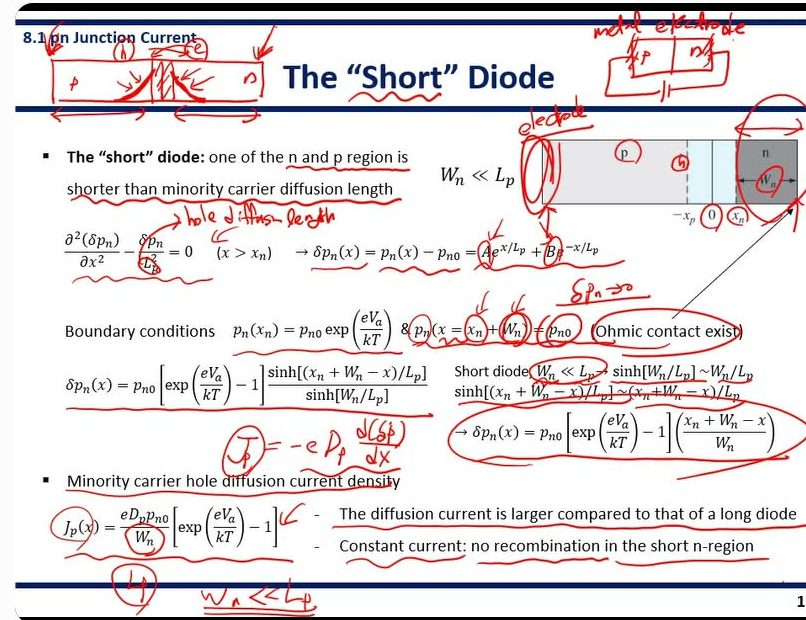
강의 41:52 "Before we assume that both p region and n region are long enough compared to the minority carrier diffusion length. So minority carrier, they decay out before they reach to the end point of the p region or n region. … But in the short diode, … minority carrier reach to the end point of the p or n region before they decay."
강의 43:04 "Usually at the end point of the p or n region, there are electrode, usually a metal electrode. Because we usually use pn junction as a diode, so we need the electrical contact. … And when the excess minority carrier reach the metal electrode on either side, they disappear immediately because massive surface recombination happens at the electrode."
자료에 없음 43:53 오믹 접촉에서 과잉분이 0 이 되는 이유 = 금속 계면에서의 대량 표면 재결합(surface recombination). 슬라이드는 "(Ohmic contact exist)" 라고만 적었다. 다이오드는 회로에 연결해야 하므로 양 끝에 금속 전극이 반드시 있다는 설명도 말로만 했다.
강의 45:17 "The first boundary condition is the original boundary condition in a typical pn junction … this can be also applied to the short diode. And we have another boundary condition, a second boundary condition, which is for the short diode. … excess minority carrier, δpn, goes to zero at this end point because of this surface recombination."
판서 47:10~48:46 [판서] A, B 동그라미 · pn(x = xn + Wn) = pn0 의 각 기호 동그라미 · "δpn → 0" · (Ohmic contact exist) 동그라미 · sinh 근사 줄 밑줄 · 직선 결과식 큰 동그라미 · "Jp = −eDp d(δp)/dx" · Wn 동그라미 · 맨 아래 "Wn ≪ Lp" 네모
경계 조건 두 개 → sinh 해 → Wn ≪ Lp 로 sinh 벗기기 → 직선 → 확산 전류 식 순서를 판서로 따라갔다. 마지막에 분모 Wn 과 맨 아래 Wn ≪ Lp 를 이어 "그래서 전류가 크다"를 보였다.
강의 48:55 "In the short diode, we have Wn here, the width of the n-region, instead of Lp from the original equation. And remember this Wn is much shorter than the hole diffusion length Lp. So the diffusion current in the short diode is much larger compared to that of a long diode."
강의 49:30 "This equation does not contain any variable X. So that means we have a constant current through the entire n-region … So a constant current means that there's no recombination take place in the short n-region."
강의 50:02 "So these are the theory on the short diode. So you need to compare the short diode with the typical long diode."
★ 시험 포인트 — 이 쪽에 9분(41:06~50:16)을 썼다. 강의에서 가장 길다. "long 과 비교하라"(50:02)는 말 그대로 비교 문제가 나오기 좋다: ① 두 번째 경계 조건(먼 곳 열평형 ↔ xn+Wn 에서 δp = 0, 표면 재결합) ② 분포(지수 ↔ 직선) ③ 전류(분모 Lp ↔ Wn, 더 큼) ④ 위치 의존(감소 ↔ 일정, 재결합 없음).
14쪽Generation-Recombination Currents — 공핍층 안에서 생기고 사라지는 전류
Reverse-bias generation current
- High electric field in the space charge region → No electrons and holes (the electrons and holes are swept out by the E-field) → recombination rate within the space charge region = 0 → there will be still generation of electrons and holes
역방향 생성 전류. 역방향이면 공핍층 전기장이 아주 세다 → 공핍층 안에 전자·정공이 있어도 즉시 쓸려 나가 거의 없다 → 재결합하려면 짝이 있어야 하므로 재결합률 = 0 → 그런데 열에너지로 전자–정공 쌍이 생성되는 일은 계속 일어난다. 생기자마자 전기장에 쓸려 나가며 전류가 된다.
(6장 SRH: 재결합률 R 은 n·p − ni² 에 비례한다. n, p 가 거의 0 이면 R 이 음수 = 알짜 생성.)
Jgen = eniW/(2τ0)
생성 전류 밀도. ni = 진성 캐리어 농도, W = 공핍층 폭, τ0 = 공핍층 안 수명. 공핍층이 두꺼울수록(W↑) 생성이 일어나는 부피가 커져 전류가 크다.
눈여겨볼 차이: Js 는 ni², Jgen 은 ni 에 비례한다.
JR = Js + Jgen
Js: the reverse-saturation current density that is independent to VR
Jgen: the generation current density that is dependent to the W (W = f(VR))
실제 역방향 전류 JR = 이상 다이오드의 Js + 생성 전류 Jgen.
Js 는 역전압과 무관, Jgen 은 W 에 비례하고 W 는 역전압이 클수록 넓어지므로(7장) 역전압에 따라 늘어난다. 그래서 실제 다이오드의 역방향 전류는 완전히 평평하지 않고 조금씩 커진다.
이 그림(위)은 역방향 밴드 그림이다. 공핍층에 "E-field" 상자, EFi, EFp 와 n 쪽 준페르미 준위가 크게 벌어져 있고, 공핍층 안에서 생긴 전자는 n 쪽으로, 정공은 p 쪽으로 쓸려 가며 Jgen 화살표를 만든다.
Forward-bias recombination current
- Low electric field in the space charge region → there are some electrons and holes in the space charge region → there is the possibility that some of these electrons and holes will recombine within the space charge region
순방향 재결합 전류. 순방향이면 공핍층 전기장이 약하다 → 넘어가던 전자·정공이 공핍층 안에 머물러 있다 → 그 안에서 서로 만나 재결합할 수 있다. 5쪽 가정 ⑥("공핍층 안에서 각 전류 일정")이 깨지는 지점이다.
Jrec = (eWni/2τ0) exp(eVa/2kT) = Jr0 exp(eVa/2kT)
Jrec: the recombination current density
재결합 전류 밀도. 앞의 계수는 생성 전류와 같은 꼴(Jr0 로 묶음). 차이는 지수가 eVa/2kT — 분모에 2 가 붙는다.
왜 2 인가: 공핍층 한가운데서 n·p = ni²exp(eVa/kT) 이고, n 과 p 가 같을 때 재결합이 가장 많으므로 각각 niexp(eVa/2kT) — 제곱근을 취하면 지수가 반이 된다.
이 그림(아래)은 순방향 밴드 그림이다. 공핍층 가운데 x = 0 에서 EFn, EFp 가 EFi 를 사이에 두고 벌어져 있어, 전자와 정공이 둘 다 있는 구간이 생긴다.
판서 50:16~60:52 [판서] 제목 옆 작은 막대 p | h e | n · "R ∝ n·p = 0" 네모 · Reverse-bias generation, Forward-bias recombination 동그라미 · Jgen 의 W 동그라미, JR = Js + Jgen 동그라미 · 가운데 손그래프: Js 에서 역방향으로 갈수록 내려가는 곡선, V 동그라미 · 밴드 그림 E-field 상자와 공핍층 큰 타원 · 아래 순방향 밴드 공핍층에 e, h 동그라미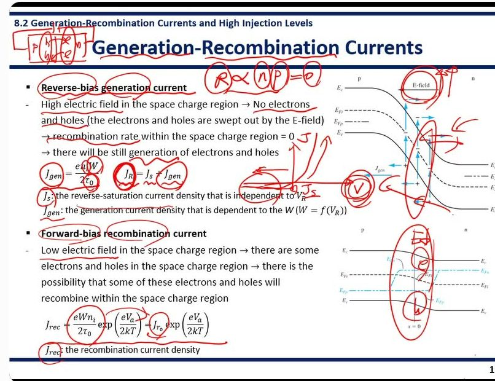
강의 50:24 "When we derive the ideal current voltage relationship … we only consider the diffusion of hole and diffusion of electron. So we did not consider any generation and recombination in this structure, but in reality generation and recombination happens within the depletion region. So we need to consider these effects in order to derive the more realistic, so non-ideal current voltage relationship."
강의 51:56 "The existence of this strong E field within the space charge region implies that there's no electron and hole in the space charge region. … once the hole from the n side enters to the depletion region, it will be swept out by this electric field. … So recombination does not happen within the depletion region because the recombination rate R is proportional to the carrier concentration, n and p."
자료에 없음 52:47 재결합률이 0 인 근거 = R ∝ n·p (판서 네모 "R ∝ n·p = 0"). 공핍층 안에 n, p 가 둘 다 0 이니 곱도 0. 6장 SRH 재결합 식과 연결된다.
강의 53:49 "The current due to generation of the electron and hole within the depletion region can be defined like this. More details how to derive this relationship can be found in your textbook so you can read it carefully. And this generation current is proportional to the intrinsic carrier concentration and also the width of the depletion region, W. And it is inversely proportional to the average lifetime, τ0."
자료에 없음 53:58 Jgen 유도는 강의에서 생략하고 교재를 꼼꼼히 읽으라고 했다(Neamen 8.2.1). 슬라이드엔 결과식만 있다.
강의 55:08 "Before we assume that the reverse current is independent to the applied reverse bias because Js is independent to the reverse bias. But now we have a new component, Jgen. And this current is dependent on W … and this W is a function of applied reverse bias. So as a result, this generation current is dependent on the applied reverse bias."
판서 57:12~58:24 [판서] 슬라이드 가운데에 J–V 손그래프: 순방향은 지수로 상승, 역방향은 Js 수평선에서 시작해 역전압이 커질수록 아래로 더 내려감
"let me erase a little bit" 하고 11쪽 J–V 곡선을 다시 그렸다. 이상 다이오드라면 역방향이 −Js 에 평평하게 붙지만, 생성 전류를 넣으면 역전압을 키울수록 역방향 전류가 계속 커진다. "첫 번째 비이상 효과"의 그림이다.
강의 58:00 "Once we consider the generation current, we now have the dependence of the applied reverse bias on the reverse bias current density. … as we increase the reverse bias further, then we also have the increased reverse bias current. So that's the first non-ideal effect. And the second thing we need to consider is the forward bias recombination current."
강의 59:39 "In the forward bias condition, this electric field is reduced. So low electric field in the space charge region means that there are some electron and hole stay in this depletion region. … existence of the electron and hole in this depletion region means that there is a possibility of recombination within the depletion region."
★ 시험 포인트 — 비이상 효과 두 개를 짝으로: ① 역방향 = 전기장 강함 → n·p ≈ 0 → 재결합 0, 생성만 → Jgen ∝ niW/τ0, 역전압에 따라 증가 ② 순방향 = 전기장 약함 → 공핍층에 전자·정공 존재 → 재결합 → Jrec ∝ exp(eVa/2kT). "Js 는 VR 와 무관, Jgen 은 W(VR) 를 통해 의존"을 말로 두 번 짚었다(55:08, 55:30).
15쪽Total Forward Bias Current — ideality factor n
- The total forward bias current density = the recombination current + the ideal diffusion current densities
J = Jrec + JD JD = Js exp(eVa/kT) Jrec = Jr0 exp(eVa/2kT)
실제 순방향 전류 = 재결합 전류 + 이상 확산 전류. JD(D = diffusion)는 11쪽 식에서 −1 을 버린 것이다.
- When some of injected charge carriers are recombined in the space charge region, then additional charge carriers must be injected to compensate the recombination loss → recombination current
재결합 전류가 왜 "전류"인가: 주입된 캐리어 일부가 공핍층 안에서 재결합해 없어지면, 그 손실을 메우려고 전극에서 캐리어를 더 넣어 줘야 한다. 이 추가 공급분이 외부에서 보면 전류로 잡힌다.
이 그림(오른쪽 위)은 순방향에서 n 쪽 정공 분포다. x = 0 의 값 pn(0) = pn0exp(eVa/kT) 에서 시작해 exp(−x/Lp) 로 줄어든다. 공핍층 쪽(왼쪽)에 "Recombination" 표시(⊗)가 있다.
ln Jrec = ln Jr0 + eVa/2kT = ln Jr0 + Va/2Vt
ln JD = ln Js + eVa/kT = ln Js + Va/Vt
양변에 ln 을 씌우면 둘 다 Va 에 대한 직선이 된다. 기울기만 다르다: 재결합 전류 1/(2Vt), 확산 전류 1/Vt.
이 그림(오른쪽 아래)은 세로축 ln(J), 가로축 eVa/kT. "Recombination current, Jrec (slope = ½)"는 절편 ln(Jr0)이 높지만 완만하고, "Ideal diffusion current, JD (slope = 1)"는 절편 ln(Js)이 낮지만 가파르다. "Total current" 는 낮은 전압에서는 재결합 직선을, 높은 전압에서는 확산 직선을 따라간다.
- The diode current-voltage relationship I = Is[exp(eVa/nkT) − 1]
n: the ideality factor · n ≈ 1: diffusion dominates · n ≈ 2: recombination dominates
두 경우를 한 식으로 쓰려고 지수 분모에 n 을 넣었다. 이 n 은 전자 농도가 아니라 이상 계수(ideality factor)다.
n ≈ 1 → 확산 전류가 지배(높은 순방향). n ≈ 2 → 재결합 전류가 지배(낮은 순방향). 실제로 잰 I–V 의 ln I 기울기에서 n 을 읽어 어느 전류가 주인공인지 판단한다.
판서 60:52~66:27 [판서] 제목 옆 "Vf → E↓ → ⓗ → R → Irec" 사슬 · JD, Jrec 식 큰 동그라미 · 보충 문장 밑줄 · ln JD 의 JD 에 "×A" · I 식의 n 동그라미 · 오른쪽 위 그림의 p, n, δp, pn(0) 동그라미와 화살표 · ln J 그래프의 두 직선, Total current 동그라미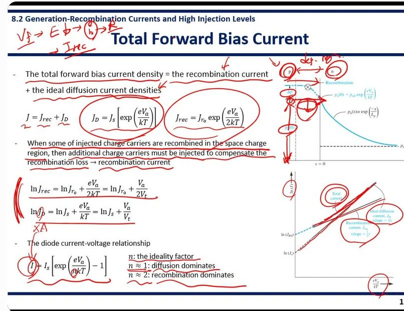
판서 60:52 제목 옆 사슬 [판서] Vf → E↓ → (h) → R → Irec: 순방향 → 공핍층 전기장↓ → 공핍층에 캐리어(h)가 머묾 → 재결합(R) → 재결합 전류. 14쪽 아래 문단을 한 줄로 줄인 것이다.
강의 60:52 "The total forward bias current density is going to be the recombination current density plus the ideal diffusion current density. So before we only consider this part, ideal diffusion current density … But now we have another component."
강의 62:10 "When some of the injected charge carriers are recombined in this depletion region, then the additional charge carrier should be injected to compensate the recombination loss. So that's what makes the recombination current. … this pn0 is the amount of hole diffused from the p side to the n side before recombination. … because of the recombination, we have loss of the hole concentration."
강의 63:30 "Additional hole with the concentration of δp should be injected from p-side to the n-side to compensate this recombination loss. Additional injection of hole creates the recombination current. This is the origin of the recombination current."
자료에 없음 62:34~63:57 오른쪽 위 그림 읽는 법. 재결합이 없으면 n 쪽 경계 정공 농도가 pn(0) 인데, 공핍층에서 일부가 재결합해 δp 만큼 모자란다. 그 δp 를 p 쪽에서 추가로 주입해야 하고, 이 추가 주입이 재결합 전류의 정체다.
강의 64:03 "If we take logarithm on both sides, then we have these equations. If we plot this current with respect to eVa/kT … this graph represents the ideal diffusion current. This graph shows the recombination current density. The total current density is going to be the summation of those two."
강의 65:03 "Here we use I. I is a current and J is the current density. So we apply the area then we can find the current. Without the recombination current, we did not have n here, but with the non-ideal effect, so recombination and generation, we have a new parameter n. So n represents the ideality factor. And if this is close to 1, then this is ideal."
강의 66:01 "If the pn junction diode has an IV relationship with the ideality factor close to 2, that means the non-ideal recombination current is dominant over the diffusion current. So by obtaining this n value in the pn diode, we can evaluate the ideality of the pn junction diode."
자료에 없음 66:08 ideality factor 의 쓰임: 만든 다이오드의 I–V 를 재서 n 을 구하면 그 다이오드가 얼마나 이상적인지 평가할 수 있다. 슬라이드엔 n ≈ 1, 2 의 뜻만 있다.
★ 시험 포인트 — J = Jrec + JD, 재결합 전류의 기원("추가 주입으로 손실 보충 — origin"), ln J 기울기 1 vs ½, ideality factor n ≈ 1(확산)·≈ 2(재결합)와 그 용도(이상성 평가). 그래프에서 낮은 전압은 재결합 직선, 높은 전압은 확산 직선을 따른다.
16쪽Tunnel Diode — 장벽을 뚫고 지나간다
- Degenerate semiconductors: Fermi levels lie in the conduction band or valence band
축퇴 반도체(degenerate semiconductor) = 도핑을 너무 많이 해서 페르미 준위가 밴드갭을 벗어나 n 형은 전도대 안, p 형은 가전자대 안까지 들어간 반도체(4장). 터널 다이오드는 p, n 양쪽을 다 이렇게 만든다.
- As doping concentrations go high, the depletion region width decreases → direct tunneling from the conduction band of the n-type region to the valence band of the p-type region
도핑이 높을수록 공핍층이 얇아진다(7장: W ∝ 1/√N). 아주 얇아지면 n 쪽 전도대 전자가 언덕을 넘지 않고 뚫고 지나가 p 쪽 가전자대의 빈자리로 바로 건너간다. 2장의 터널링(장벽이 얇으면 입자가 통과할 확률이 생김)이다.
이 그림(왼쪽)은 열평형 터널 다이오드의 밴드다. n 쪽 EF 가 Ec 위에, p 쪽 EF 가 Ev 아래에 있고 EF 는 한 줄로 평평하다. 아래는 공간전하 영역의 퍼텐셜 장벽(삼각형) — 폭이 아주 좁다.
- Forward bias condition
순방향 네 단계 그림(밴드 + I–V). ① 조금 걸면 n 쪽 채워진 전자 높이와 p 쪽 빈 가전자대가 겹쳐 터널 전류가 늘기 시작 ② 겹침이 최대일 때 전류 꼭대기(peak) ③ 더 걸면 n 쪽 전자 높이가 p 쪽 밴드갭과 마주쳐 겹침이 줄어 전압↑인데 전류↓ — 음성 미분 저항 ④ 더 걸면 터널링은 끝나고 보통 다이오드의 확산 전류가 늘어난다.
- Reverse bias condition
역방향: p 쪽 가전자대의 채워진 전자가 n 쪽 전도대의 빈자리와 마주 보게 되어 p→n 으로 터널링한다. 그래서 역방향에서도 전류가 크게 흐른다(보통 다이오드처럼 막지 않는다).
판서 66:27~70:29 [판서] 제목 옆 "high doping concentration" · conduction band 위 "n-type", valence band 위 "p-type." · 문장 밑줄 · n region, EF 동그라미 · 순방향 네 단계 그래프 점에 동그라미·화살표 · Reverse bias 밑줄, 그 그림과 곡선에 동그라미·화살표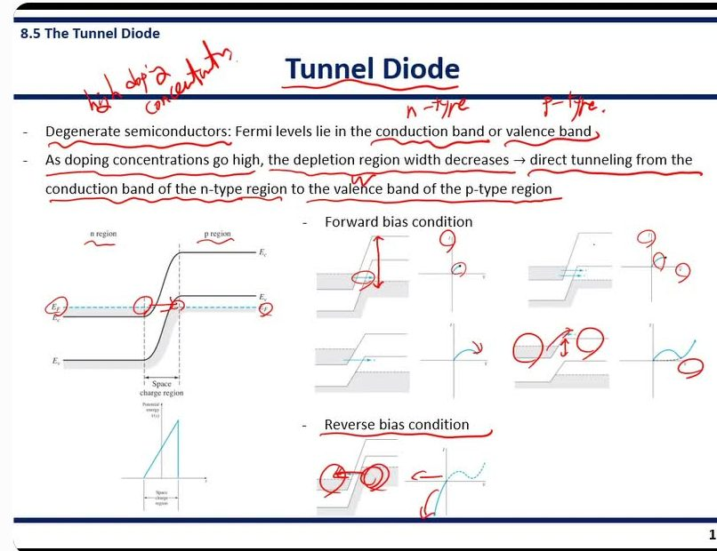
강의 66:34 "As we learned previously, degenerate semiconductors are the semiconductors with a high doping concentration. And the Fermi level in these degenerate semiconductors lies in the conduction band for n-type and valence band for p-type. … when we make a pn junction with these degenerate n and p semiconductors, then this diode is considered as the tunnel diode."
강의 67:48 "As doping concentration goes high, the depletion region width decreases. … W is dependent on the doping concentration and it is reduced as doping concentration goes high. So because of the narrow depletion region, direct tunneling from the conduction band of the n-type region to the valence band of the p-type region becomes available."
강의 68:32 "Because of the high doping concentration, we have a high built-in potential here … So direct tunneling happens here, so current is generated. As we increase the forward bias further, we have increased the tunneling probability, so we have an increased current. However, as the forward bias increases, the conduction band of the n-region and valence band of the p-region are separated, so tunneling probability is reduced. So we have a reduced current here."
강의 69:14 "As the forward bias increases further, the potential barrier between the conduction band of the n-region and p-region is reduced. So we again have increased the current because of the reduced barrier. So initially, we have a current generated because of the tunneling, but as the forward bias increases, we now have current because of the reduced potential barrier."
강의 69:56 "In the reverse bias condition, we also have a direct tunneling from the valence band of the p-region to the conduction band of the n-region. So the current monotonically increases with the reverse bias voltage."
자료에 없음 68:32 도핑이 높으니 Vbi 도 높다(7장 Vbi ∝ ln(NaNd)). 그래도 W 가 매우 얇아 터널링이 된다. 그리고 순방향 끝에서 전류가 다시 오르는 이유를 "터널링이 아니라 낮아진 장벽 때문(보통 다이오드의 확산 전류)"이라고 구분했다. 슬라이드엔 그림만 있다.
★ 시험 포인트 — "간단히만"(08:41) 다룬 쪽이지만 순서는 분명하다: 양쪽 degenerate(EF 가 밴드 안) → 도핑↑ → W↓ → 직접 터널링. 순방향 I–V: 증가(터널링) → 감소(밴드가 어긋남, 음성 미분 저항) → 다시 증가(장벽↓, 확산). 역방향: 단조 증가(p 가전자대 → n 전도대 터널링).
부록부록 — 마무리
강의 70:29 "이렇게 해서 진도는 모두 나가 보았고요. 오늘도 긴 시간 동안 고생 많으셨습니다." — 다음 시간 예고나 공지는 없었다.
부록부록 — 이 문서 읽는 법 · 출처
원문 = [반도체공학 강의자료] Chapter 8. The pn Junction diode (원본 16쪽, 필기 없음). 쪽 번호는 이 원본 기준이다. 카톡으로 돌던 17쪽짜리 필기본(유도 쪽 1장 삽입)은 쓰지 않았다.
강의 = 2026-11-08 화면 녹화 72분(LMS 영상). 0~8:50 은 한국어, 이후 영어. 자동 전사(faster-whisper small) 후 영어를 한국어로 잘못 인식한 8개 구간은 영어로 다시 인식했다. 인용의 조사·어미와 영어 문장의 세부는 실제 발음과 조금 다를 수 있다.
판서 = 영상에서 쪽마다 잉크가 가장 많이 쌓인 프레임. 원본 PDF 에는 필기가 없으므로 이 문서의 손글씨는 전부 영상 판서다.
전사 622줄 100% 쪽 배정.
맨 위로